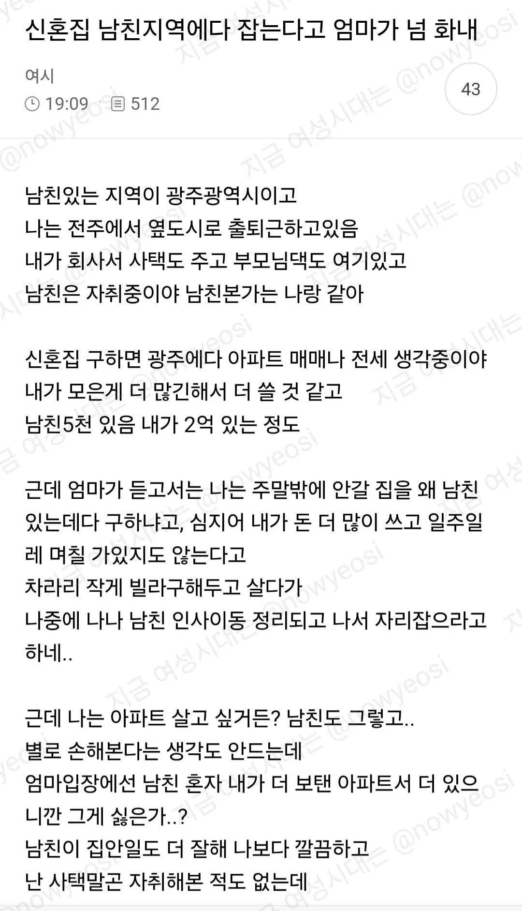
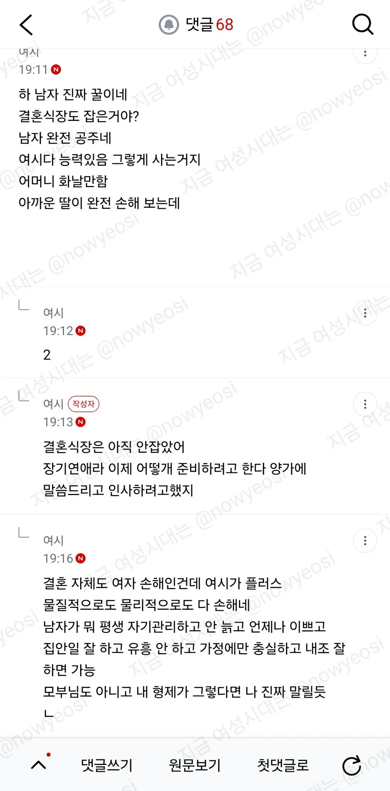
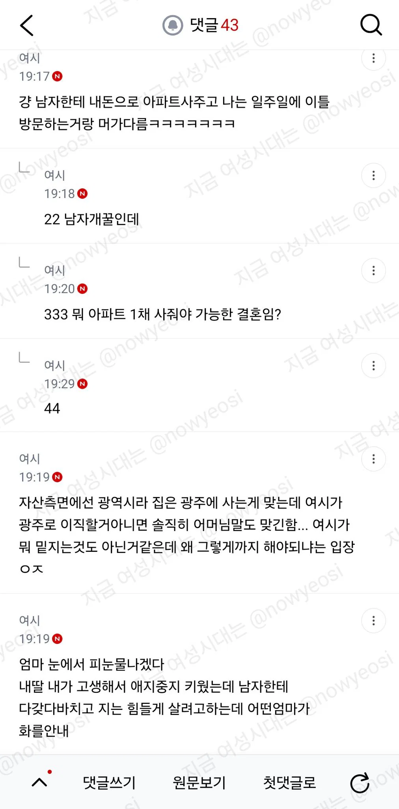
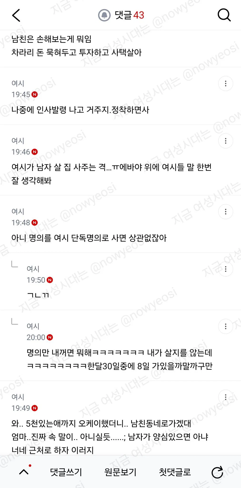
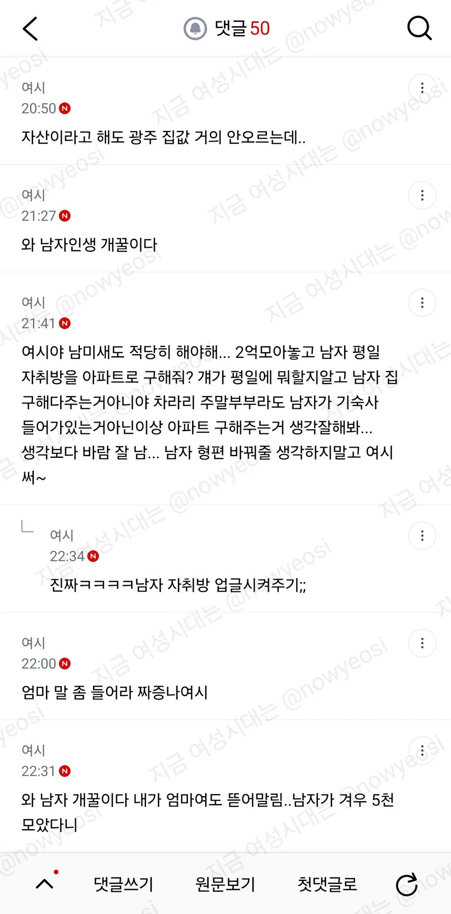
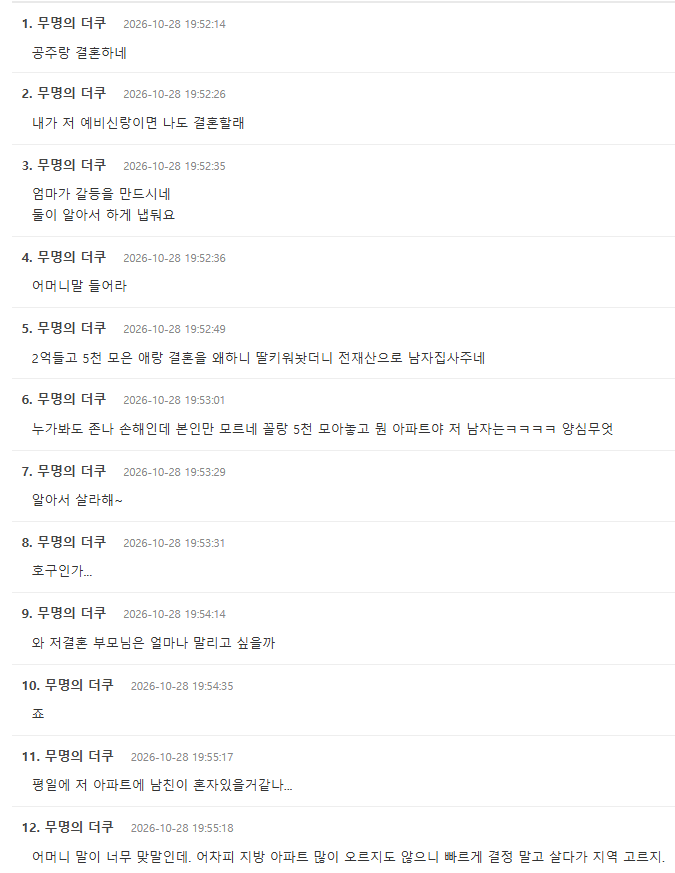
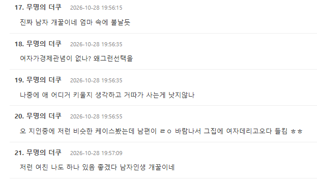

여자가 2억에 남자가 5천 모아오니까
'남자 인생 개꿀' 소리가 난무하는데...
지금까지 여자 인생은 얼마나 개꿀이었던 거임?







여자가 2억에 남자가 5천 모아오니까
'남자 인생 개꿀' 소리가 난무하는데...
지금까지 여자 인생은 얼마나 개꿀이었던 거임?
마통 3천보다 8천이나 더 모아왔는데 뭐가 불만이지ㅋㅋㅋ
장모야 딸가지고 장사하냐 ㄱ같은ㄴ아
근대 둘이 직장이 다르니까 큰문제네 부모님께 애들 맡길거면 전주쪽이 낫을거같기도하고
애 낳을 생각 있으면 친정 가까운 게 좋긴 하지
'결혼자체도 여자가 손핸데' 이딴 소리 하고 있는거 보면 그냥 걸러야됨
??? : 어허 결혼 자체가 여자한테 손해란말입니다
?? : 몸 다 망가지면서 애도 낳아주는데!
지들도 알긴하지만 이 악물고 딴 소리하는거지 뭐.
남녀만 바뀌었다고 개꿀되네ㅋㅋ
이게 진짜 존나 웃기네 ㅋㅋㅋㅋㅋㅋㅋㅋㅋㅋㅋ
인사이동 정리되고 나서 정착하는게 맞는거 같은데
ㅋㅋㅋㅋ 시발 ㅋㅋㅋㅋ
재산 유지 또는 물가상승율이 반영되고 싶으면 지역상 광주가 낫지. 전주보다는.. 그냥 금전적으로는 그렇긴함
여시들은 돈을 벌어본 적이 없어서 2억이 결혼 전에 뚝딱 만들어진다고 생각하나봄 ㅋㅋ
그래 딸이 손해보는데 엄마가 화가 많이 나셨겠지
그동안 아들이 손해를 보니까 시어머니들이 화가 많이 났던거임
으이그 능지
어휴 씨발
걍 성별 바꿔서 만든 낚시글이구만
줄줄이 낚이네
낚였네 ㅋㅋㅋㅋㅋ
본인들도 다 알긴아는구나 개꿀빨고있다는걸 ㅋㅋㅋㅋㅋ
걍 성별만바꾼 낚시글 다낚이네 ㅋㅋㅋㅋㅋ
부모를 모부로 쓰는 애들인데 뭘 바라나 싶다
댓글에 사랑 얘기가 단 한명도 없네
주작이지. .뭐
결혼은 손해니까 하지말라레유
자백하고 고백하는 모습 보기좋습니다~ 여자가 개꿀이긴하죠?
결혼하고도 그렇게 따질거면 왜 결혼했냐 ㅋㅋㅋ
결혼이 뭐라고 생각하길래 손해라고 생각하는거지
이해할 수가 없네
매매혼인가
무명의 더쿠3이 옳은말하네
나도 이 생각함. 이런 문제는 부모가 왈가왈부할게 아니지 고부갈등을 스스로 만들고 계시네
남녀를 떠나서 조금 더 정리하고 매매하는게 나을거 같은데
역시 커뮤하는 보지들은 씹년들이 맞다. 길가다 강간이나 쳐당하고 정신병걸리길 ㅋㅋㅋ